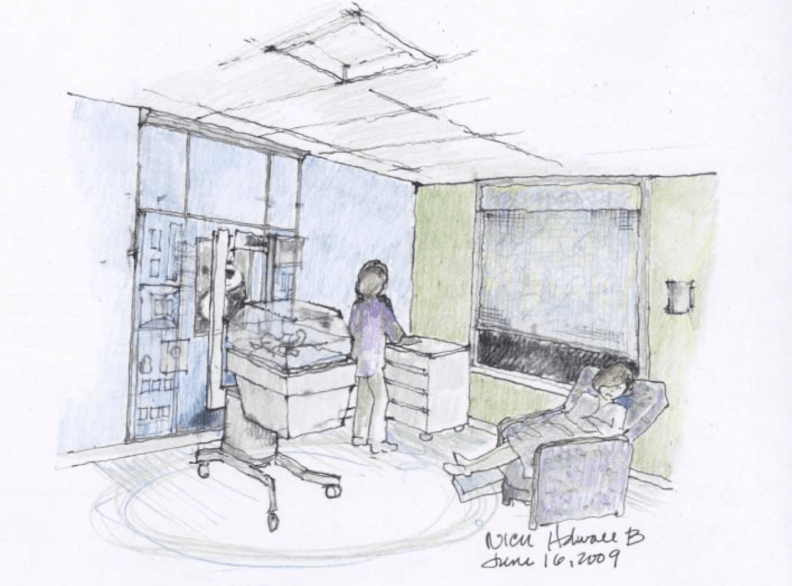
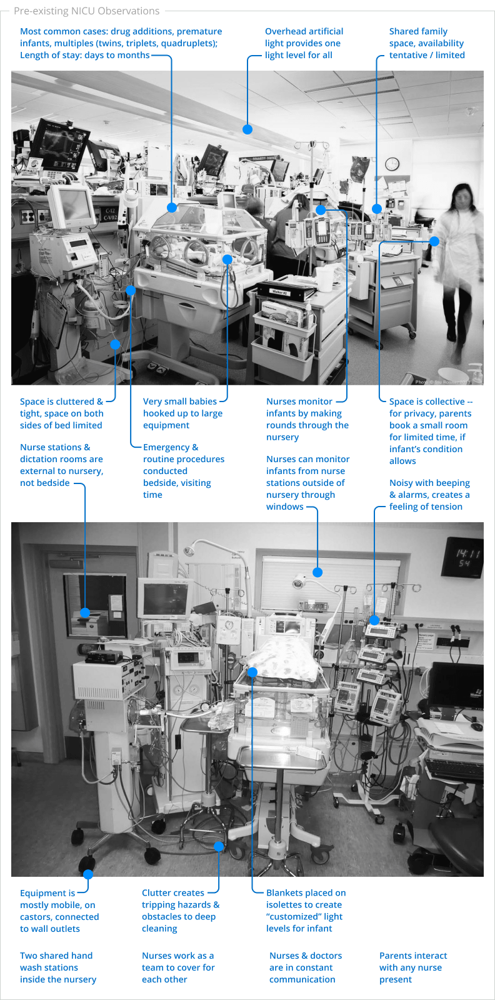
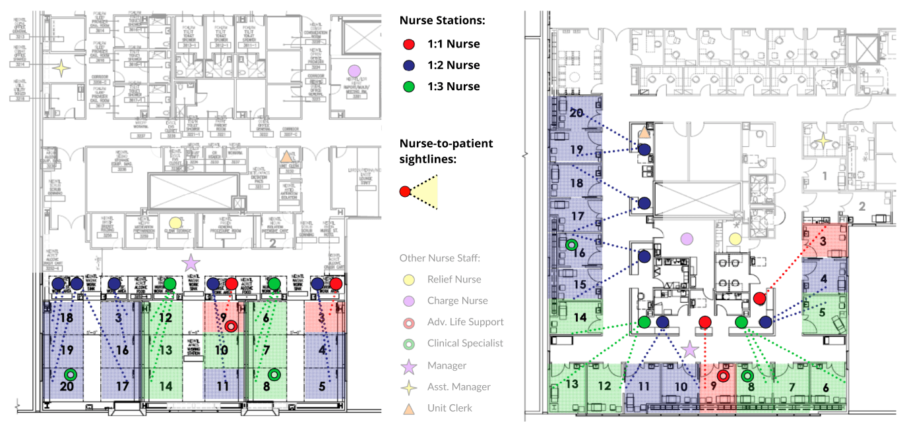

Kaiser San Diego
Designing a Neonatal Intensive Care Unit: UX at the Boundary of Life and Death

Enabling Those who Support Society’s Most Fragile
Born at 22 weeks with underdeveloped lungs, doctors gave Isabella a one percent chance to live. Everyone braced for her impending death.
Lee, Marcella (reporter). (2014, March 14: 18:41 PDT). Evening news (tv newscast). San Diego, CA: CBS Channel 8.
How did Isabella beat the odds?
First and foremost – an innate instinct to survive, a devoted family, and a highly focused professional care team. And quietly underpinning their coordinated efforts? A state-of-the-art interactive environment, pioneering a family-centered approach to neonatal intensive care.
The new patient room: functional design validated through research, prototyping, and simulation.
Designing for Critical Infants & Care Teams
Two years prior to Isabella’s birth, I had been a part of the core architecture team that implemented a bold new approach to Neonatal Intensive Care Unit design, rooted in Kaiser’s evidence-based research and current studies on family-centered care.
This is the Neonatal Intensive Care Unit that played a key role in giving Isabella and other infants an improved chance at life.
What is a Neonatal Intensive Care Unit (NICU)?
Most newborns experience their first moments in a parent’s arms before being taken to the well-baby nursery. Critically-ill or premature newborns are instead rushed to a high-tech nursery to receive 24/7 specialized care.
The majority of NICU stays are unanticipated, with caregivers – some recovering from high-risk pregnancies – being separated from their newborns. That separation is proven to compound the trauma experienced by infants, parents, and extended family.
Pre-existing traditional NICU - open bay layout.
Our improved NICU design - private room configuration.
What makes this NICU “state-of-the-art”?
- Technology: the newest, most advanced, and rigorously tested equipment with proven outcomes.
- Participatory approach: a design approach shaped by years of studies that addresses the shortcomings of prior models through a layout organized around a fundamental idea: that an infant's caretakers are vital participants in the care team.
- Spatial considerations: a series of mutually-reinforcing spaces that take into consideration – along with life-saving systems and technology – the patient, family, and staff’s functional and emotional needs.
What makes a NICU good is its technology. We configured the systems-intense spaces to enable and extend the capabilities of the professional care team. By necessity, a NICU must be machine-like: clinical, precise, and sterile.
What lifts a NICU to the next level is its attention to the human condition – as experienced by the constellation of participants it serves. We prioritized the end-users that the space is meant to serve, rather than treating them as secondary to the technological aspect of the design.
If the NICU walls could talk, they would tell you that they witness the extremes of human struggle in its overwhelming rawness of life and death: trauma, resilience, panic, ingenuity, loss, capability, tragedy, love, perseverance. Statistically, the emotional intensity of the NICU stresses healthcare professionals, families, and relationships to the breaking point. To better serve these individuals, we designed for their needs for a calm and supportive environment.
Private-room conceptual sketch, featuring natural lighting and space to sleep (artist unknown).
My Role
As a core member of the architectural team, I collaborated on all facets needed to take the project from paper to reality, from planning spatial relationships, to construction, to move-in: technology and systems coordination, concept development, jurisdictional approvals, and upholding design intent follow-through during implementation.
This particular case study focuses on the user experience facet, which itself had many aspects to balance. My task was to advocate for the end-users of a systems-dominated, technology-heavy space. Our human-centered design approach prioritized the end-users’ experiences along with – not secondary to – life-saving systems and technology.
As project designer, I progressively built iterations upon new and existing hospital planning research, direct end-user work sessions, feedback from trade specialists, and observations of workflow simulations via prototypes.
Human-Centered Design in a Machine-Intensive Environment
Our Stakeholders

What did the NICU experience look like to our end-users? What were their goals, and what did they need to achieve them? The NICU was the stage set for a host of characters, each with different – and often competing – concerns that we balanced:
One-time end-users, for whom the outcome is life or death. How does one design for a primary end-user who cannot communicate its needs? Data and studies told the story of improved outcomes from customized environments and proximity to their caretakers.
Needs:
- Levels of sound, diurnal lighting, stimulation, and temperature optimized for healing and development – which vary per infant and over time; traffic and disturbance control.
- Access to a set of considerations referred to as “kangaroo care”: skin-to-skin touch, caretakers’ voices, smells, and interaction, which lower stress and stimulate senses, helping infants survive and develop.
- Nutrients, medication, and life-saving equipment to accommodate a range of patients, from most to least acute, with stays in the NICU ranging from days to many months.
- Constant monitoring by Nurses, quick and decisive actions of Doctors.
Hyper-focused on patients, Neonatologists are the NICU’s expert power-users. They need to communicate, delegate, and act efficiently with the team. Seconds matter. Their jobs are eased if they can provide an optimal environment for the development of each newborn.
Needs:
- Near-instant access to technology, to aid in keeping infants alive and stable – Neonatologists do not have time to struggle with technology.
- Proximity to the professional care team, and access to patients’ caretakers.
- Clear space to conduct procedures bedside, particularly emergency procedures, to avoid moving fragile patients.
- Controls to optimize an environment for each infant’s specific developmental needs.
- Identical room setups to support workflows that leverage spatial memory and muscle memory in support of speed, accuracy, and safety for doctors working across multiple rooms.
Some are battling the needs to recover from childbirth and instincts to protect, some are battling drug addiction, some have given birth to triplets. They need access to information, rest, quiet, and privacy. They, like patients, are novice but intense one-time end-users. Some are there for months.
Needs:
- An environment that eases stress and promotes rest breaks, despite the circumstances.
- Ability to easily stay close to their newborn; and for those with multiples, the ability to stay together.
- Proximity to the Antepartum if the mother is a recovering patient.
- Access to the professional care team for information, updates, and training for feeding and special care.
- Options for privacy with their newborns, as well as options to socially interact with other parents.
- Security against abduction – unfortunately, family members’ duress can lead to bad decisions in the NICU.
Keenly tracking many things at once, nurses, like doctors, are NICU expert power-users: they must continuously monitor infants and vitals, perform routine care, be poised to assist doctors with procedures at any moment, and control traffic moving through the department. They also calm and inform the patients’ caretakers.
Needs:
- Proximity to all: the professional team, support staff, security, patients, and families, for continuous communication and immediate response.
- Ability to regulate occupants for security, infection control, and crowd management.
- Clear space for routine care and to assist Neonatologists and specialists.
- Sightlines from any seated position to each infant’s head, ensuring a nurse-to-patient ratio of 1:1 to 1:3.
- Support services that separate “dirty” and “clean” workflows for infection control.
- Ergonomic placement of equipment, especially for repetitive tasks.
The support staff team is made of expert intermittent users in a critical role – infection control. Housekeeping professionals may handle multiple departments, so it is important that department layouts are consistent and support intuitive protocol compliance.
Needs:
- Clutter-free spaces that allow for ease of deep-cleaning and disinfecting.
- Department layouts that minimize cross-contamination between dirty and clean workflows.
- Consistency with housekeeping layouts and protocol in other departments in the hospital, and a layout that encourages typical best practices to minimize errors.
- Ergonomic placement of equipment, especially for repetitive tasks.
Not technically a NICU end-user, the client is interested in careful monitoring of performance. How users report on their experiences, patient outcomes, overall bed-occupancy, and the ability to attract and retain talent are all important data-points for the hospital’s star department.
Needs:
- Positive patient experiences and ratings.
- Stand-out professional rankings for the department and hospital – positive outcomes and new technology to attract talent and retain staff.
- Improvements to physical proximities of departments that support one another, for more efficient workflows and better patient outcomes.
- Strategic implementation of improvements to keep all six hospital floors fully functional and minimize department downtime due to construction.
Observing Workflow Dynamics in the Pre-existing NICU
In order to improve the experiences of this diverse set of end-users, we needed to understand how they functioned in the pre-existing NICU. We kicked off months of research with walk-throughs of the NICU that was slated to be replaced.
Configured in a “traditional” layout, the department consisted of a single large room nursery with nurse stations outside of the nursery. Nurses monitored newborns through windows into the nursery and by making rounds through the room. The care team rolled in supplemental mobile equipment as needed. A small corner was kept clear for a few wooden rocking chairs where parents or volunteers could sign up for time slots to feed and hold newborns inthe shared space.
What did the NICU experience look like to our end-users? What were their goals, and what did they need to achieve them? The NICU was the stage set for a host of characters, each with different – and often competing – concerns that we balanced:

Top image: Pre-existing traditional NICU layout, also called an “open-bay” configuration.
Bottom image: Pre-existing typical isolette with surrounding mobile equipment.
Researching User Experiences of Different Layouts
Leveraging a wealth of contemporanneous studies on NICU design innovations, including Kaiser’s own research, we quickly immersed ourselves in the end-users’ worlds. This helped us:
- Understand strengths and weaknesses of different configurations.
- Further clarify major concerns for end-users and workflows, and ask new questions.
- Stay on top of new insights in a constantly developing subject area.
Prior to the project, Kaiser had evaluated various layout options to select their optimal approach. Two starkly different examples considered were pods and private rooms:
A “pod” layout, with a centralized nurse station.
A private room layout, with distributed nurse stations.
The pod layout model was essentially a traditional open-bay layout modified for smaller groups of isolettes – such as three rooms with six isolettes each instead of one room with 18. Pods are best monitored by a centralized bank of nurse stations. This approach was an improvement on the open-bay, but there was still little to no room for parents.
The private room layout model presented a dramatic operational change for staff. Nurse stations were distributed, rather than centralized, to achieve sightlines to patients. The layout required larger nurse stations to accommodate centrally networked computers to monitor multiple patients simultaneously. Each room accommodated a family zone.
Understanding the Design Team’s Position in the Continuum of NICU Research
Several hospitals were already piloting 1-2 private rooms in combination with pods or open bays. The NICU at SDMC was committing to all private rooms (with flexible configurations to connect rooms for twins, triplets, and quadruplets), using the valuable feedback gained from the pilots.
Unlike many product roll-outs, beta-testing in life-or-death situations s not an option. Kaiser appointed an expert panel that had spent six years refining best practices based on studies, tours, interviews, and low-fidelity full-size mockups to simulate procedures. Our team would be iterating on the resulting room templates.
Typical NICU patient room template released by Kaiser as their national standard in 2006.